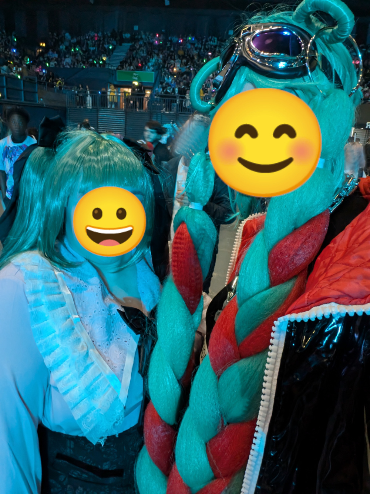

Miku Expo
26/01/2025
I've been thinking again about Miku Expo recently.
I still kind of can't believe it was real? Miku is this nebulous thing that's basically just an instrument, yet on one night in October last year, she was real and playing music in London. An experience that really hit me quite hard.
I've been to a lot of gigs in my life. A few of them have been like that - concerts that feel unreal, like they shouldn't really happen? It's a brag but I once won tickets to see Gorillaz' dress rehearse for their Glastonbury set in like, 2010, and that was genuinely insane.
But obvs that was insane because it was so small, like. 30 people, maybe? Lou Reed was sat behind me asleep until he was needed, lol. But Miku was a big gig, in Wembley Arena, with hundreds if not thousands of people there. Yet it still felt really revelatory?
It was just kinda surreal. The opening song of the set was Anamanaguchi's Miku, a favourite of tiktokers. I'm a longtime guchi fan, pre-Endless Fantasy, and I've seen them all three times they've done a UK tour. And all three times they've played tiny little venues; the Bodega in Nottingham holds maybe 200 people max?
And to see that track performed by Miku at a venue orders of magnitude bigger than anything Anamanaguchi have played here was, frankly, utterly surreal. I loved it! I mean, I loved the whole set, it was amazing to see artists like Kira, synthion and SAWTOWNE get represented alongside the classic big hitter vocaloid producers.
We went in cosplay, too! First gig I've been to in cosplay, probably reasonably, but again a lovely choice because so did so many other people! I think this was helped by MCM being the same weekend so plenty of people came straight from the con in cosplay.
I was Magical Mirai 2023 Miku! Just cause the wig is bananaramas big. It was a good choice honestly, super comfortable streetwear, and while the wig was unwieldy it was honestly really fun to dance around in. I mean it ended up fucked, obviously, sweat + dancing + close proximity to a million other people tends to fuck up a wig something fierce. Cat was The Vampire Miku too and so got insanely excited when that was second on the set list, lol.
But, yeah. Just a kinda insane experience that I really loved. I am so excited for the next time Miku comes to the UK!! Next time I'm getting tickets Avery and Asa.
{kind=link}